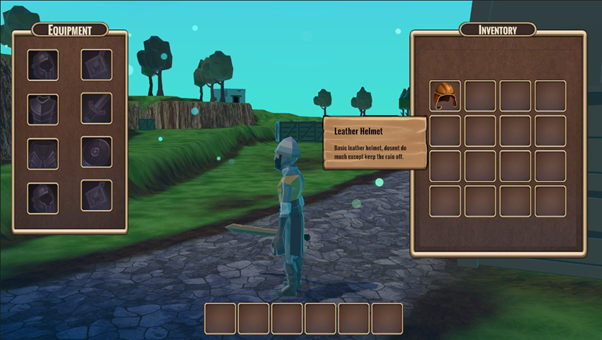
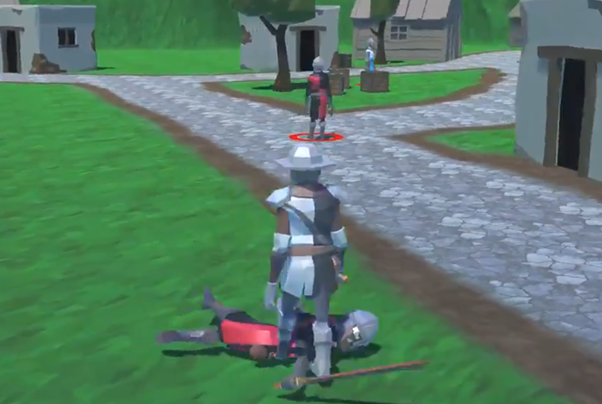

<link
  rel="stylesheet"
  href="https://use.fontawesome.com/releases/v5.8.2/css/all.css"
  integrity="sha384-oS3vJWv+0UjzBfQzYUhtDYW+Pj2yciDJxpsK1OYPAYjqT085Qq/1cq5FLXAZQ7Ay"
  crossorigin="anonymous"
/>

<link rel="preconnect" href="https://fonts.gstatic.com">
<link href="https://fonts.googleapis.com/css2?family=Roboto+Mono:wght@300&display=swap" rel="stylesheet">
<link href="https://fonts.googleapis.com/css2?family=Raleway:wght@600&display=swap" rel="stylesheet">
<link href="https://fonts.googleapis.com/css2?family=Roboto+Condensed:wght@300&display=swap" rel="stylesheet">
<link rel="stylesheet" href="info.css">

<head>
<meta name="viewport" content="width=device-width">
<title>Belghast's Dominion</title>
</head>

<main>
  <nav id="navbar">
    <h2 id = "projectTitle">Belghast's Dominion</h2>
    <a href="index.html">Back</a>
  </nav>

  <div style="min-height:10vh;"></div>

<p>Belghast’s Dominion was a third-person RPG I was creating during 2020, this was my first large independent project and had a lot of learning opportunities because of this. However, it also had a fairly large amount of problems with lack of preplanning, and lack of knowledge as how to create certain systems. </p>
<p>Built in Unity 2020.1.14f1</p>
<p>Built in 6 months. June 2020 - December 2020</p>
  <button><a href="https://github.com/AdamHarris-GamesProgrammer/RPG-Prototype" target="_blank">GitHub Repository</a></button>
  <div id = "body">
    <h2>Features</h2>
    <div class="features">
      <div>
        <li>Inventory System</li>
        <li>Serialized Save Data System</li>
      </div>
      <div>
        <li>Player and Enemy Levels</li>
        <li>Different Enemy Types</li>
      </div>
        <div class="videoFrame"></div>
      <div>
        <div class="videoFrame"></div>
      </div>
    </div>
    <div>
      <h2>Tweets</h2>
      <div class="tweets">
        <blockquote class="twitter-tweet"><p lang="en" dir="ltr">Been a long time since I showed an updated version of my <a href="https://twitter.com/hashtag/RPG?src=hash&amp;ref_src=twsrc%5Etfw">#RPG</a> project. The inventory system is now fully implemented complete with enemy drops (currently not balanced) Player can equip and unequip items some that have additional effects as well <a href="https://twitter.com/hashtag/gamedev?src=hash&amp;ref_src=twsrc%5Etfw">#gamedev</a> <a href="https://twitter.com/hashtag/gamedevelopment?src=hash&amp;ref_src=twsrc%5Etfw">#gamedevelopment</a> <a href="https://twitter.com/hashtag/unity?src=hash&amp;ref_src=twsrc%5Etfw">#unity</a> <a href="https://t.co/oiowBML94E">pic.twitter.com/oiowBML94E</a></p>&mdash; Adam Harris (@AdamHarrisDev) <a href="https://twitter.com/AdamHarrisDev/status/1341039101420711942?ref_src=twsrc%5Etfw">December 21, 2020</a></blockquote> <script async src="https://platform.twitter.com/widgets.js" charset="utf-8"></script>
        <blockquote class="twitter-tweet"><p lang="en" dir="ltr">Here&#39;s a demonstration of my inventory&#39;s dragging system which works for all items. Also shows a few of the item descriptions and dropping them into there armour slots etc, next up is actually equipping the items <a href="https://twitter.com/hashtag/gamedev?src=hash&amp;ref_src=twsrc%5Etfw">#gamedev</a> <a href="https://twitter.com/hashtag/gamedevelopment?src=hash&amp;ref_src=twsrc%5Etfw">#gamedevelopment</a> <a href="https://twitter.com/hashtag/unity2020?src=hash&amp;ref_src=twsrc%5Etfw">#unity2020</a> <a href="https://twitter.com/hashtag/madeinunity?src=hash&amp;ref_src=twsrc%5Etfw">#madeinunity</a> <a href="https://twitter.com/hashtag/indiegamedev?src=hash&amp;ref_src=twsrc%5Etfw">#indiegamedev</a> <a href="https://t.co/UIdbGtYyzz">pic.twitter.com/UIdbGtYyzz</a></p>&mdash; Adam Harris (@AdamHarrisDev) <a href="https://twitter.com/AdamHarrisDev/status/1321134930483662850?ref_src=twsrc%5Etfw">October 27, 2020</a></blockquote> <script async src="https://platform.twitter.com/widgets.js" charset="utf-8"></script>
        <blockquote class="twitter-tweet"><p lang="en" dir="ltr">Been about a week since I last showcased my <a href="https://twitter.com/hashtag/RPG?src=hash&amp;ref_src=twsrc%5Etfw">#RPG</a> project. So the new features include basic audio, damage text, improved AI systems. <a href="https://twitter.com/hashtag/gamedev?src=hash&amp;ref_src=twsrc%5Etfw">#gamedev</a> <a href="https://twitter.com/hashtag/gamdevelopment?src=hash&amp;ref_src=twsrc%5Etfw">#gamdevelopment</a> <a href="https://twitter.com/hashtag/indie?src=hash&amp;ref_src=twsrc%5Etfw">#indie</a> <a href="https://twitter.com/hashtag/indiegamedev?src=hash&amp;ref_src=twsrc%5Etfw">#indiegamedev</a> <a href="https://twitter.com/hashtag/unity3d?src=hash&amp;ref_src=twsrc%5Etfw">#unity3d</a> <a href="https://twitter.com/hashtag/MadeInUnity?src=hash&amp;ref_src=twsrc%5Etfw">#MadeInUnity</a> <a href="https://t.co/hf6igAWSup">pic.twitter.com/hf6igAWSup</a></p>&mdash; Adam Harris (@AdamHarrisDev) <a href="https://twitter.com/AdamHarrisDev/status/1292814266693816320?ref_src=twsrc%5Etfw">August 10, 2020</a></blockquote> <script async src="https://platform.twitter.com/widgets.js" charset="utf-8"></script>
      </div>
    </div>
    <div>
      <h2>Challenges</h2>
      <p>Managing AI States. Early on in the development of Belghast’s Dominion I decided on using a Finite State Machine for controlling the enemy AI agents in each level, this provided an interesting challenge as it was my first time doing AI programming, overall the main challenges from this came from creating perception systems, and balancing the Ais attacks so they wouldn’t frustrate the player. </p>
      <p>Inventory. Developing the Inventory System for Belghast’s Dominion was a considerable challenge as it involved using a lot of new aspects of Unity’s UI system such as generating content based on item’s descriptions or using Unity’s dragging systems to enable the player to drag items around their inventory screens.</p>
    </div>
  </div>

  <footer id="footer">
    <h3 id="footer-text">Adam Harris &copy;2021</h3>
  </footer>
</main>
